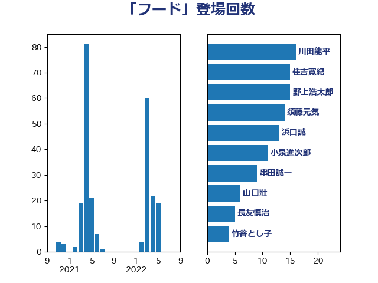

単語「フード」

| 川田龍平 | 立憲民主党 | 16 回 |
| 住吉寛紀 | 日本維新の会 | 15 回 |
| 野上浩太郎 | 自由民主党 | 15 回 |
| 須藤元気 | 無所属 | 14 回 |
| 浜口誠 | 国民民主党 | 13 回 |
| 小泉進次郎 | 自由民主党 | 11 回 |
| 串田誠一 | 日本維新の会 | 9 回 |
| 山口壯 | 自由民主党 | 6 回 |
| 長友慎治 | 国民民主党 | 5 回 |
| 竹谷とし子 | 公明党 | 4 回 |
| 塩村あやか | 立憲民主党 | 3 回 |
| 寺田静 | 無所属 | 3 回 |
| 梅谷守 | 立憲民主党 | 3 回 |
| 武部新 | 自由民主党 | 3 回 |
| 下野六太 | 公明党 | 2 回 |
| 土屋品子 | 自由民主党 | 2 回 |
| 宮内秀樹 | 自由民主党 | 2 回 |
| 後藤茂之 | 自由民主党 | 2 回 |
| 杉田水脈 | 自由民主党 | 2 回 |
| 河野義博 | 公明党 | 2 回 |
| 熊野正士 | 公明党 | 2 回 |
| 田嶋要 | 立憲民主党 | 2 回 |
| 葉梨康弘 | 自由民主党 | 2 回 |
| 安江伸夫 | 公明党 | 1 回 |
| 小野田紀美 | 自由民主党 | 1 回 |
| 山岸一生 | 立憲民主党 | 1 回 |
| 岸田文雄 | 自由民主党 | 1 回 |
| 川合孝典 | 国民民主党 | 1 回 |
| 平山佐知子 | 無所属 | 1 回 |
| 徳永エリ | 立憲民主党 | 1 回 |
| 東国幹 | 自由民主党 | 1 回 |
| 松野博一 | 自由民主党 | 1 回 |
| 柚木道義 | 立憲民主党 | 1 回 |
| 梅村みずほ | 日本維新の会 | 1 回 |
| 渡辺周 | 立憲民主党 | 1 回 |
| 田村まみ | 国民民主党 | 1 回 |
| 田村貴昭 | 日本共産党 | 1 回 |
| 緑川貴士 | 立憲民主党 | 1 回 |
| 美延映夫 | 日本維新の会 | 1 回 |
| 赤羽一嘉 | 公明党 | 1 回 |
| 進藤金日子 | 自由民主党 | 1 回 |
| 道下大樹 | 立憲民主党 | 1 回 |
| 野間健 | 立憲民主党 | 1 回 |
| 阿達雅志 | 自由民主党 | 1 回 |